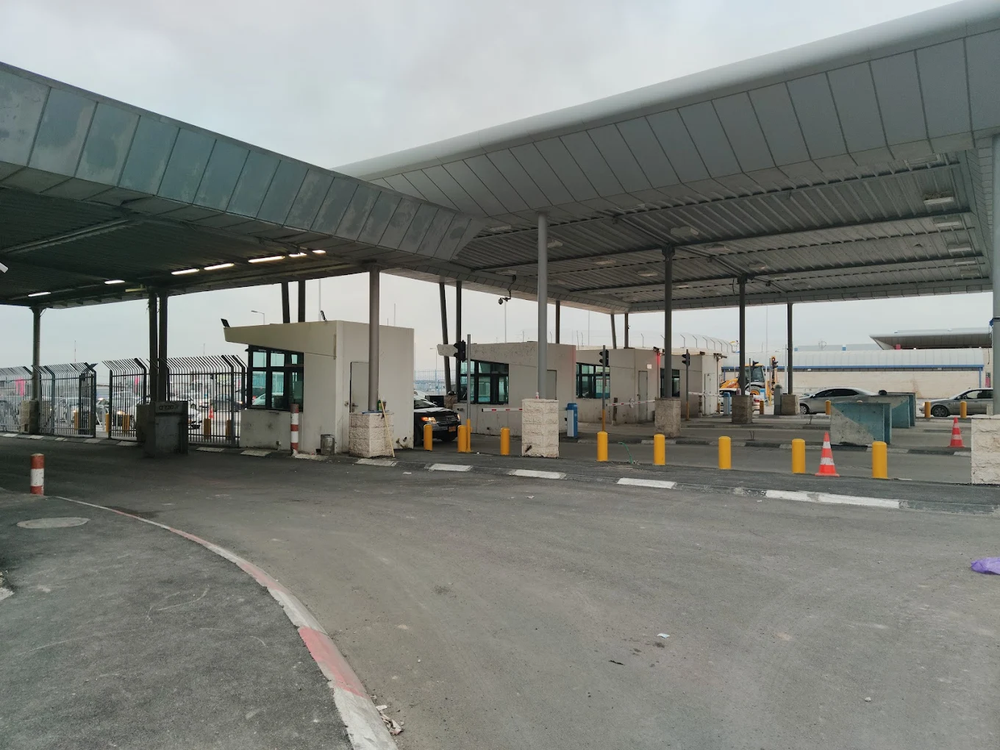

Case Studies
Checkpoints
Key sites of colonial control and their cinematic representations — each checkpoint a case study in resistance and refusal.

حاجز قلنديا
Qalandiya Checkpoint
Most documented checkpoint in the archive
- Salt of This Sea — Jacir, 2008
- The Present — Nablusi, 2020

حاجز حوارة
Huwwara Checkpoint
Contemporary footage and archive material
- The Present — Nablusi, 2020

حاجز الكونتينر (القدس)
Container Checkpoint
Known locally as the Container; appears in archive footage
- Example footage — dates TBD

حاجز راحيل (بيت لحم)
Bethlehem — Rachel Checkpoint
Featured in Jacir's Salt of This Sea and other films
- Salt of This Sea — Jacir, 2008
- When I Saw You — Jacir, 2012